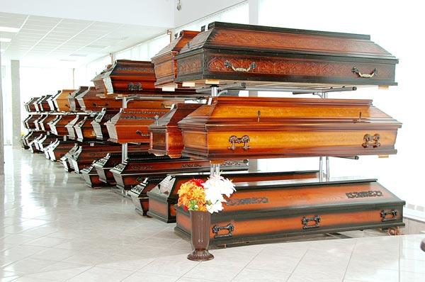
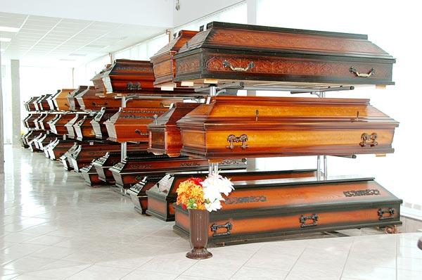

Hitni prevoz pokojnika iz Italije
Pouzdano preduzeće sa višedecenijskim iskustvom. Prevoz iz Rima, Milana, Torina i cele Italije. Kompletna organizacija u najkraćem roku, dostupni 24/7.
Pozovite nas odmah
 

Usluge prevoza iz Italije
- Prevoz iz svih italijanskih gradova
- Kompletna dokumentacija i carinske procedure
- Dostupnost 24 časa dnevno
- Specijalizovana vozila za međunarodni transport
- Osoblje koje govori italijanski jezik
Potrebna dokumentacija
- Certificato di morte (Potvrda o smrti)
- Estratto dell'atto di morte (Izvod iz MKU)
- Permesso di trasporto salma (Dozvola za transport)
- Lična dokumenta pokojnika
Mi se brinemo o kompletnoj dokumentaciji za vas. Takođe nudimo transport iz Nemačke i transport iz Austrije. Za informacije o cenama pogledajte naš cenovnik.
Gradovi u Italiji
Brzi pristup detaljnim informacijama
Rim (Roma)
PogledajteNajčešća pitanja o prevozu pokojnika iz najvećih gradova Italije
Organizujemo prevoz pokojnika iz Rima za Srbiju i region, uz
kompletnu dokumentaciju i podršku porodici. Naš tim govori
italijanski jezik i ima iskustva sa lokalnim institucijama.
Korisne informacije za Rim:
Prevoz pokojnika iz Milana vršimo uz poštovanje svih
italijanskih i srpskih propisa. Naš tim preuzima svu
administraciju i obezbeđuje vozilo sa potrebnom opremom.
Organizujemo brzu i diskretnu uslugu transporta iz Torina sa
kompletnom podrškom porodici.
Kompletna organizacija prevoza iz Napulja u skladu sa propisima
Italije i Srbije.